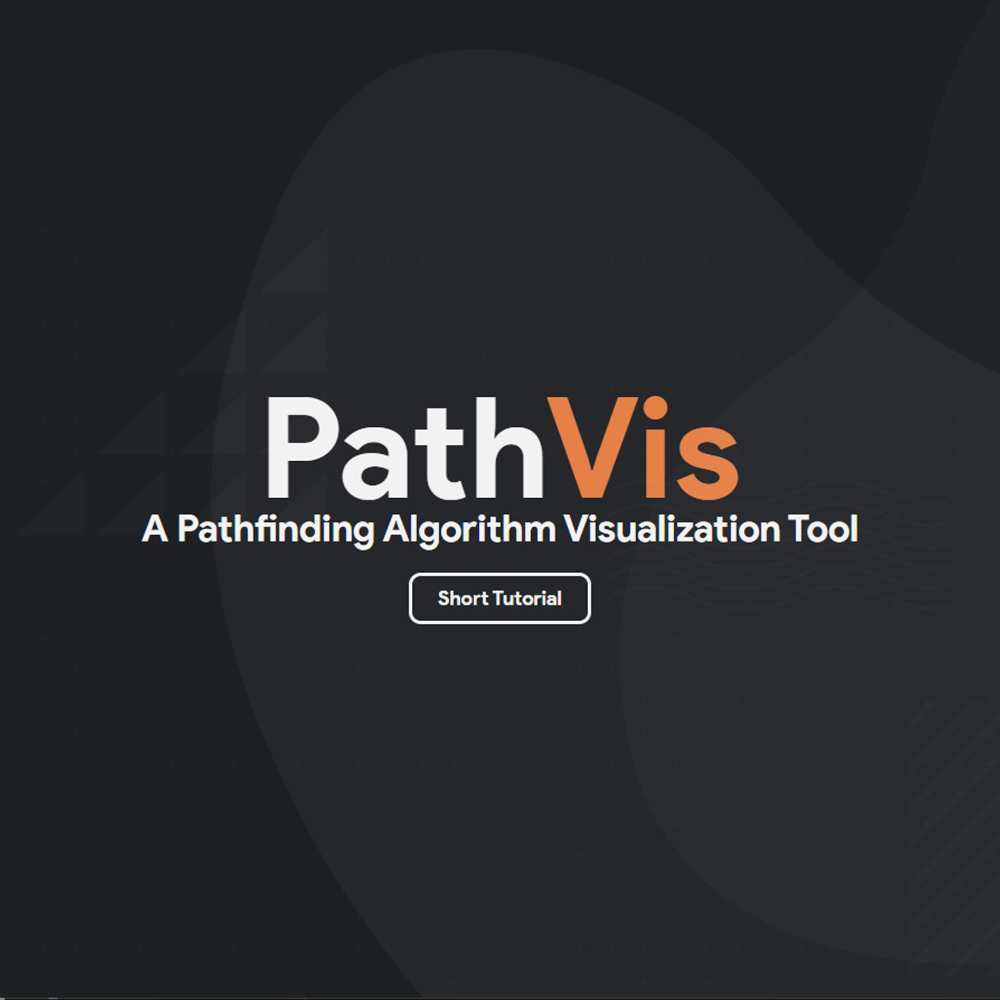

|
Benjamin Datsko I am an undergraduate at the University of Michigan pursuing a BSE in Computer Science. I enjoy deepening my knowledge in hardware design, embedded software, and integrated systems. I am currently a Research Assistant in the Michigan Integrated Circuits Lab's Flynn Research Group and a Model-Based Design Engineering Intern at Otis Elevator Company. Email / LinkedIn / GitHub / Photography |
ResearchMy research focuses on high-performance mixed-signal integrated circuits, edge computing, and embedded systems. Ongoing projects that build upon the earlier work of our group are listed according to the most recent publication associated with the project for confidentiality. These entries are marked with an asterisk (*) and will be updated to reflect latest developments/publications as they become available. |


{kind=link}
Projects |
|
|
AiApply: Create Tailored Resumes Using Generative AI
A web app for tailoring resumes to job postings based on previous work experience by gathering user's work history and generating tailored, ATS-friendly LaTeX resumes for each user-provided job posting. Features React front-end, Flask backend, OAuth for authentication, and Firebase Firestore; deployed on AWS EC2. |

|
WebSim: Michigan Solar Car Race Simulator Microservice
A navigable hub for the U-M Solar Car Team's crucial simulators and race strategy tools. Built on client-server architecture featuring React Native front-end, CRUD API written in EJS for accessing MongoDB simulation storage database, and Flask simulator API for a one-size fits all means of invoking simulators written in various languages (Java, C, etc.) via the subprocess method and piping output to a centralized location. Hosted on AWS EC2, served using Nginx; PM2 used for container orchestration, and Certbot 2 used for domain management. |

|
Quickkey: A Minimalistic Typing Test
A modern and minimalistic website designed to help evaluate and improve typing speed and accuracy. Developed using Typescript and React. Prototyped in Figma. |

|
Upper-Atmospheric Weather Balloon Payload System
A high-altitude Arduino-based payload system equipped with a TMP36 temperature sensor, thermistor, pressure sensor, humidity sensor, accelerometer, UV sensor, and GPS for the purpose of analyzing the state of the ozone layer. |
|

|
PathVis: VanillaJS Pathfinding Algorithm Visualizer
A pathfinding algorithm visualizer with the capacity to visualize a variety of algorithms, including Dijkstra's, A-Star, Greedy BFS, and Greedy DFS. Written in Vanilla JavaScript. Prototyped in Adobe XD and Adobe Photoshop. Static site hosted by Netlify. |

|
TempoTimer: Race Race Preparation for Swimmers
A mobile application that functions as an underwater metronome for swimmers' pre-race visualizations. It combinesn auditory cues with mental imagery, ensuring each stroke visualized by the athlete is in sync with the the rhythm set within the app, and thus their goal time. Developed in Java using the Android SDK. Available on the Google Play Store. |

|
Witchcraft and Wizardry - The Floo Network (RPG)
Download / GameRant A role-playing game that merges the realm of Harry Potter with Minecraft. Cast spells, brew potions, earn coins, and shop for magical gear. Take flight on broomsticks, solve riddles, and undertake over 100 quests to uncover hidden secrets. Explore Hogwarts Castle, Central London, Diagon Alley, the Ministry of Magic, and more! Suited for singleplayer and multiplayer. |

|
CubeRun - Unity Experiment
A simplistic endless runner game where the player acts as a cube within a white voide joyously traveling in a straight line at terminal velocity while also dodging spontaneously spawning rectangular prisms. |

|
Annoying Ghosts - Minecraft Realms (Adventure)
Minecraft.net / Download / Playthrough Stationed at a haunted manor brimming with weightless, amorphous specters, players are used to their usual ghost-removal duties. In this game, however, players enter the narrative with a frantic phone call from Dr. Brasington, who complains of a paintbrush-eating ghost disrupting her renovation efforts! Now it becomes your mission to capture and relocate these one-of-a-kind spectral nuisances from her estate and restore her peaceful residence. Guided by your supervisor, Benedict, through a headset radio, prepare for complete annoyance as you chase after ghosts with your trusty Suck-o-Munga 3000. Singleplayer and multiplayer friendly! |
|
|